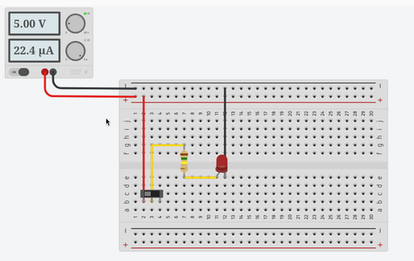

A breadboard is a prototyping tool used to test electronic circuits in a temporary manner without having to solder anything. Components such as resistors, LEDs, integrated circuits and wires can be inserted into the breadboards holes, allowing circuits to be setup in a quick manner. Wire color conventions are important as they help to verify the purpose of each connection at a glance, to help avoid mistakes from misidentifying wires at a quick glance. Common conventions include red wires for a positive voltage, black wires for ground, and other colors to signify signal lines. Consistent wire colors make circuits easier to understand, debug and maintain as time goes on.

The Tinkercad simulation of my breadboard, with the LED lit, switch closed, wires colored and neatly done.